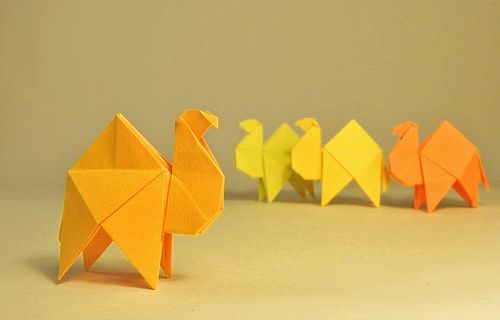

Origami Instructions and Diagrams
Step-by-step diagrams are probably the most popular and easiest to follow way to show how to fold things out of
paper.Trying to find good origami instructions on the Internet can be a lot of work though. To help your search, we've put
together the largest database of free origami diagrams anywhere on the Internet.

Interesting facts about Camels
- Camels have three sets of eyelids and two rows of eyelashes to keep sand out of their eyes.
- Their humps let them store up to 80 pounds of fat which they can live off for weeks and even months!
- Camels can travel at up to 40 miles per hour – the same as a racehorse!

Interesting facts about Chameleons
- Their skin crystals enable them to change colour at will
- A Chameleons spit is very sticky
- They mainly change clour in order to communicate or regulate body temperature.

Interesting facts about Pigeons
- They saved thousands of humans during World War 1 & 2
- Pigeons produce fake milk for their babies.
- They can find their way back to their nest from 1300 miles away.
Interesting facts about Bears
- The brown bear can reach a weight of between 150 and 370kgs.
- Despite their weight, the animals can cover short distances at speeds of up to 50 km/h.
- In the wild, these omnivores spend up to 16 hours a day looking for food.

Interesting facts about Pandas
- Pandas are lazy — eating and sleeping make their day.
- An adult panda can eat 12–38 kilos of bamboo per day!
- Pandas have carnivorous teeth, but they eat bamboo and fruit.

Interesting facts about Cicadas
- Cicadas live on all continents except Antarctica.
- Cicadas can't eat, they get nutrients from tree roots.
- Some cicadas could explode with fungus after death.